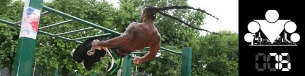

100 Дневный воркаут
<==== Вернуться к оглавлению
День 76. Техника спринтерского бега (основы)

Когда люди думают о воркауте, то в первую очередь им на ум приходят разнообразные виды подтягиваний и отжиманий, чуть позже и разные виды отжиманий на брусьях, ещё немного позже вообще разнообразные упражнения на уличных спортивных площадках. Но подавляющее большинство упражнений, которое приходит им в голову при слове воркаут, задействует и тренирует только верхнюю половину тела. Отсюда у многих создается впечатление, что воркаутеры не тренируют ноги вообще.
Но это совсем не так, просто упражнения для ног куда менее зрелищные и поэтому куда реже попадают в объективы телекамер. Но мы активно тренируем ноги, и в этом плане очень много идей подсмотрели у спринтеров!
Спринт, бег на короткие дистанции, челночный бег и всякие подобные штуки не только отлично вписываются в философию воркаута (поскольку их можно выполнять практически где и когда угодно, как и любые упражнения с собственным весом). Спринтерский бег даже бегом назвать сложно, потому что по сути он представляет собой серию взрывных движений ногами в комбинации с движениями руками с максимальной скоростью. Фактически всё ваше тело включено в работу! Да и с точки зрения эстетичности - спринтеры одни из самых сбалансировано развитых спортсменов вообще.
Такие потрясающие результаты связаны, в первую очередь с тем, что спринтерские тренировки заставляют вас каждый раз выкладываться на 70-90% от своего максимума (иначе какой это спринт?), а интенсивность - это именно то, что нужно в данном случае! Правда стоит заметить, что подобная интенсивность несёт в себе не только положительные стороны, но и отрицательные, и без должной подготовки и разминки спринтерский бег может быть довольно травмоопасным занятием. Разнообразные растяжения и мелкие травмы - это очень часто встречающаяся проблема, особенно среди начинающих. Поэтому, во-первых следует очень много внимания уделять правильной технике, а, во-вторых, наращивать скорость постепенно.
Почему стоит включить спринтерский бег в свои тренировкй
* Прокачивает тело
* Прокачивает сердечно-сосудистую систему
* Прокачивает дыхалку
* Ускоряет метаболизм
* Способствует развитию быстрых мышечных волокон
* Способствует выработке тестостерона и гормона роста
Конечно спринтерский бег подойдёт не всем, поскольку он довольно требователен в плане физической подготовки и нагрузки, но те, кто могут заниматься спринтами, просто обязаны это делать!
Ещё в
прошлом весеннем запуске
один из участников 100 дневки под ником
Barad
разобрал на составляющие грамотную спринтерскую тренировку, и сегодня мы поделимся этой информацией с вами!
Начнём с самого главного, с техники безопасности. В спринтерском беге самый травмоопасный момент - это момент старта, поэтому его мы сегодня не будем обсуждать вообще. Эта статья для новичков и начинающих, и главная наша задача - дать вам все преимущества спринтерского бега и минимизировать возможность получения вами травм. Что уж и говорить, если профессиональных спортсменов не допускают к стартам с места, пока они не научатся бегать 3 км за 15-16 минут?
Добавление от
Gunner89
: Помимо ОБЯЗАТЕЛЬНЫХ разминки ДО и растяжки ПОСЛЕ, ключевые моменты следующие:
1) Стартовать даже на такие короткие интервалы, как 20-30 метров надо плавно, без резкого первого рывка, наращивая скорость к концу и также плавно выходить из спринта.
2) Отдых между интервалами лучше всего проводить также в движении: легкий бег трусцой способствует выведению молочной кислоты, а дыхание восстановится быстрее, нежели при статическом положении.
3) Шаг должен коротким и быстрым, научиться правильно семенить ногами можно при помощи дополнительных тренировок на некрутых склонах: сила гравитации поспособствует навыкам скорого переставления точки опоры. Однако здесь, как и везде, надо беречь себя и помнить, что при беге под гору ударная нагрузка на суставы вырастает в разы по сравнению с тренировками по плоской поверхности.
Составляющие спринтерского бега
Первостепенной задачей начинающего является, собственно говоря, обучение бегу. Что именно входит в это понятие?
1. Нужно научиться уверенно пробегать 3км (про время здесь упоминать не буду)
2. Нужно научиться "выделять" при беге разные темпы бега, а именно шаг, переход с шага на бег, мед. бег или трусца, крейсерский бег или рысь, быстрый бег или галоп, макс. возможный.
3. Нужно отработать технику бега в каждой ипостаси, это важно для спринтера.
Типичная тренировка
1) Разминка
* Разминка/растяжка на месте (покрутить все суставы сверху вниз, примерно как разогрев в ролике Бадюка про растяжку) - 5 мин.
* Медленный бег - 2 мин.
* Бег рысью рысь - 2-3 мин.
* Упражнения во время бега (бег с высоко поднятыми коленями, бег с голянями до бедра, выскоки, зайчии прыжки, бег боком-приступы и перехлесты)- 5 мин.
2) Тренировка
Здесь может быть довольно много вариантов, 30-60-100-200-400 м. Отдыхать стоит примерно 3-4 минуты между забегами. Общее правило для новичка - это попробовать бегать на разные дистанции:
* не больше 1 раза на 400 и 200
* не больше 2-3 раз на 100
* про 30 и 60 м ничего не могу посоветовать
3) Заминка
* Бег трусцой - 5 мин.
* Растяжка - 5 мин.
4) ОФП
Если хотите достигнуть хоть сколько-нибудь значимых результатов в спринтах, то без дополнительной тренировки общей физической подготовки здесь не обойтись. И здесь у спринтеров довольно большой арсенал возможных упражнений (почти все упражнения можно выполнять с дополнительным весом в виде штанги, гантель или
утяжелителей
:
- Выпады (50-100 метров)
- Зашагивания на высокую скамейку
- Выпрыгивания
- ???
Следует заметить, что это пример программы, которую вы можете использовать, а на самом деле всё гораздо сложнее, потому что даже в спринтерском беге можно выделять различные виды, направленные на достижение разных целей. Впрочем, если вы готовы заморочиться и у вас неплохо обстоят дела с английским, то эта статья для вас http://www.bodybuilding.com/fun/par46.htm
Почему стоит включить спринтерский бег в свои тренировкй
* Прокачивает тело
* Прокачивает сердечно-сосудистую систему
* Прокачивает дыхалку
* Ускоряет метаболизм
* Способствует развитию быстрых мышечных волокон
* Способствует выработке тестостерона и гормона роста
Конечно спринтерский бег подойдёт не всем, поскольку он довольно требователен в плане физической подготовки и нагрузки, но те, кто могут заниматься спринтами, просто обязаны это делать!
Ещё в прошлом весеннем запуске один из участников 100 дневки под ником Barad разобрал на составляющие грамотную спринтерскую тренировку, и сегодня мы поделимся этой информацией с вами!
Начнём с самого главного, с техники безопасности. В спринтерском беге самый травмоопасный момент - это момент старта, поэтому его мы сегодня не будем обсуждать вообще. Эта статья для новичков и начинающих, и главная наша задача - дать вам все преимущества спринтерского бега и минимизировать возможность получения вами травм. Что уж и говорить, если профессиональных спортсменов не допускают к стартам с места, пока они не научатся бегать 3 км за 15-16 минут?
Добавление от Gunner89: Помимо ОБЯЗАТЕЛЬНЫХ разминки ДО и растяжки ПОСЛЕ, ключевые моменты следующие:
1) Стартовать даже на такие короткие интервалы, как 20-30 метров надо плавно, без резкого первого рывка, наращивая скорость к концу и также плавно выходить из спринта.
2) Отдых между интервалами лучше всего проводить также в движении: легкий бег трусцой способствует выведению молочной кислоты, а дыхание восстановится быстрее, нежели при статическом положении.
3) Шаг должен коротким и быстрым, научиться правильно семенить ногами можно при помощи дополнительных тренировок на некрутых склонах: сила гравитации поспособствует навыкам скорого переставления точки опоры. Однако здесь, как и везде, надо беречь себя и помнить, что при беге под гору ударная нагрузка на суставы вырастает в разы по сравнению с тренировками по плоской поверхности.
Другая типичная двухдневная тренировка
Вот ещё один вариант тренировки, составленный примерно по тем же принципам. На этот раз спринтерский бег разделён на два дня, между которыми предполагается делать 2-3 дня отдыха (разминка и заминка аналогичные предыдущему варианту ОБЯЗАТЕЛЬНЫ для выполнения всегда!):
День А:
1) 5 раз по 80 метров, 10 минут отдыха между подходами
2) 4 раза по 70 метров, 3 минуты отдыха между подходами
3) 3 раза по 60 метров, 3 минуты отдыха между подходами
4) 2 раза по 20 метров, 3 минуты отдыха между подходами
* Оранжевые конусы разметки отлично подходят для обозначения нужного расстояния ;)
День Б:
1) 3 раза по 200 метров с ускорениями после отметки 100м, 5-10 минут отдыха между подходами
2) 2 раза по 100 метров с максимальной скоростью, 5-1 минут отдыха между подходами
3) 1 раз по 50 метров с максимальной скоростью
Даже несмотря на то, что некоторые дистанции предполагается пробегать с максимальной скоростью, я напоминаю, что эту скорость вы набираете в процессе, а не стремитесь стартовать сразу с максимума. Больше безопасности, меньше травм, лучше результаты! Таков наш девиз =)
Пара заключительных слов
Не последнее значение в этом деле является и та экипировка, которую вы используете, и те условия, в которых собираетесь тренироваться.
Во-первых, поверхность, по которой вы будете бегать является критичной. Лучше всего - специальное покрытие (на треках на стадионах можно найти), хуже - гравий, щебень, совсем плохо - асфальт или высушенный суглинок.
Во-вторых, обувь, в которой вы собираетесь бегать так же является критичной. Главное - НЕ кеды. Ещё важный момент - жесткая фиксированная пятка. Всё остальное, форма амортизатора, его толщина, вид протектора, вес, продувание является предметом активных споров и обсуждений, как в интернете, так и среди профессионалов.
======> День 77. Лучшая притча о жизни